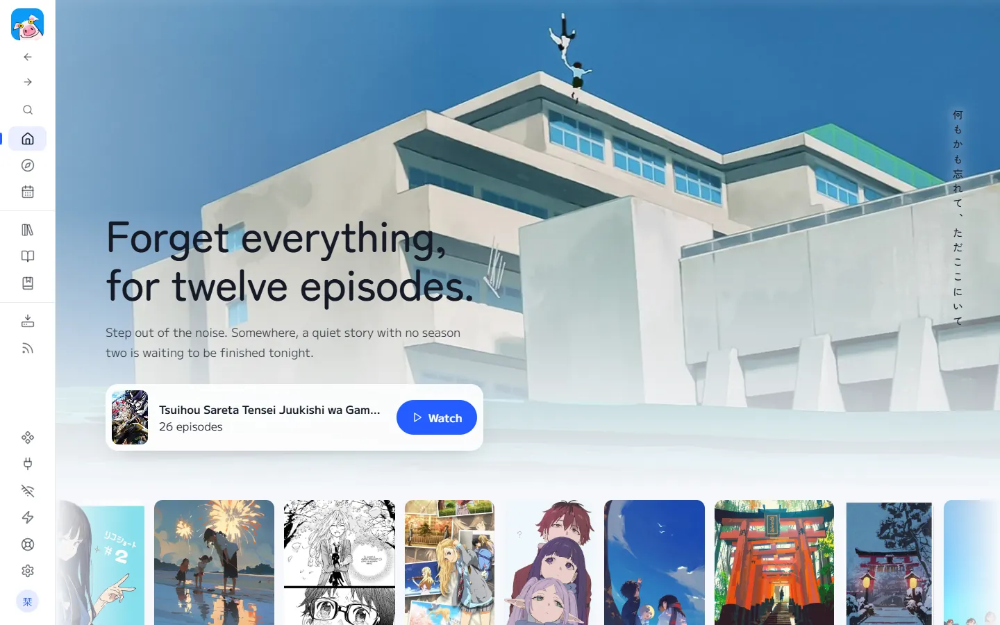
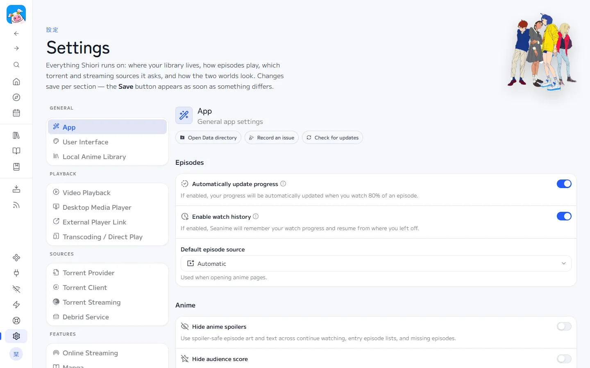
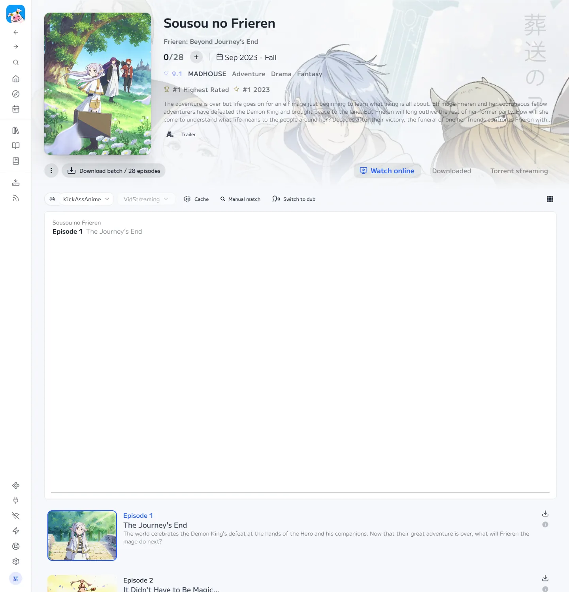
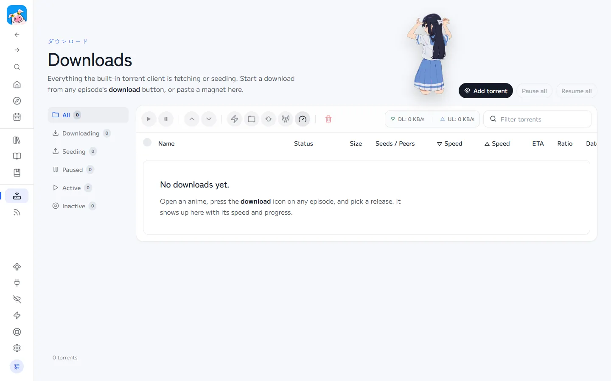
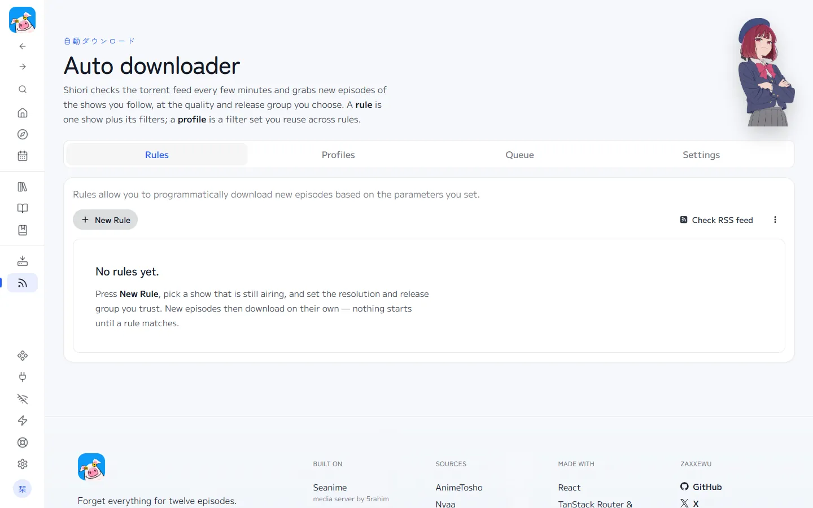
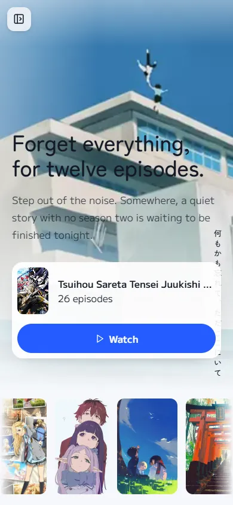

Docs
From a fresh download to your first episode, then everything after. The same guide ships inside the app under Guide.
What Shiori is
Shiori is one program that runs on your own computer and opens in your browser. It streams anime, downloads single episodes or whole seasons, reads manga, and syncs your progress with AniList. It hosts no media itself and there is no Shiori account: your copy, your password, your folders.

Install
- Download the latest release zip for Windows and unzip it into a folder you keep, for example
C:\Apps\Shiori. - Double-click
Shiori.exe. Shiori is not code-signed yet, so Windows may show "Windows protected your PC": click More info, then Run anyway. The first-run setup page opens in your browser. - Choose a password of at least 20 characters. Shiori saves it under
%APPDATA%\Shiori, enables strict mode, adds a Shiori icon to your desktop and Start menu, and opens itself in a new tab once it is ready. - On later launches, double-click the Shiori desktop icon. If it is already running in the tray, the same click opens it. Keep the extracted folder where it is: the icon points into it.
macOS and Linux: build from source (below). The same commands work with / paths.
Set a password
The Windows app asks for a password before the server starts for the first time. It writes the following private file for you:
SEANIME_SERVER_PASSWORD=pick-a-long-random-password
SEANIME_SECURE_MODE=strictThe login page asks for that password on every new browser or device. Ten wrong tries lock a device out for five minutes. Advanced users can still edit %APPDATA%\Shiori\.env while Shiori is stopped.

First run
- Library folder: Settings, Local Anime Library. Choose where downloaded episodes go. Pick a drive with room: a season is roughly 4 to 15 GB.
- AniList (optional): create a free account at anilist.co, then the account button at the bottom of the sidebar, Log in with AniList. Progress and lists sync from then on.
- Sources: The Windows zip includes the reviewed Shiori streaming, torrent and manga sources. Use Extensions if you want to disable one or add another after reviewing its code.
Watch online
Open any anime. It lands on Watch online, the player on top and the episodes below. Pick an episode and it streams. If a source fails, Shiori moves to the next one; you can also pick a source yourself.

Set up downloads
Downloading needs a torrent source (where to search) and a client (what downloads).
- Settings, Torrent Provider: pick a default source, for example AnimeTosho.
- Settings, Torrent Client: choose the built-in client (nothing else to install) or qBittorrent / Transmission.
- Save both, then restart Shiori once after changing the client.
Download one episode
Every episode in every list has a download icon. Press it: a drawer opens already searching for that episode. Pick a release (more seeders means faster), press Download. Follow it on the Downloads page.

Download a whole season
On the anime page press Download batch under the cover. For finished seasons Shiori looks for batch releases, one torrent with every episode. Untick files you do not want.
Auto downloader
Auto downloader, New Rule: choose an airing show, the release group you trust and the resolution. Shiori checks every 20 minutes and downloads new episodes into your library. Nothing downloads unless a rule matches.

Manga
Add a manga to your list or open one from Discover. Chapters load from a manga source; switch source if some are missing. Tick chapters and press Download to read offline.
On your phone
Never forward port 43000 on your router. Install Tailscale on your computer and your phone, then open your computer's Tailscale address. Add it to your home screen for an app-like window.

Build from source
Needs Git, Node.js 22+ and Go 1.26+.
git clone <repository-url> shiori
cd shiori/seanime/seanime-web
npm ci
npm run build
cd ..
cp -r seanime-web/out/. web/
CGO_ENABLED=0 go build -o shiori -trimpath -ldflags="-s -w" -tags=nosystray .
./shiori --datadir "$HOME/Shiori"Troubleshooting
An episode will not play
Try another source from the picker, or use Manual match: the source may have matched a different season.
A download finished but the show shows 0 episodes
Run Scan from Home, then check Scan summaries for files that did not match.
My password is rejected
Shiori reads the password only at start. Restart it after editing .env. After ten wrong tries, wait five minutes.
My lists and the schedule are empty
Connect AniList from the account button at the bottom of the sidebar.